依據實機操作流程依序編排，涵蓋：Google 極速註冊、信箱手動註冊、建立首個儲存庫、線上 Commit 檔案、以及必備的 2FA 雙因素身份驗證！
如果您平時有使用 Google 帳號（Gmail），在註冊時強烈建議直接選擇「Continue with Google」！
👉 優點：無需手動輸入信箱、不用記額外密碼、不用經歷繁瑣驗證，一秒快速完成帳號綁定與授權，最省時省力！
| github.com | GitHub 官方網站首頁 |
| Sign in | 登入（右上角按鈕） |
| Continue with Google | 使用 Google 帳號繼續（推薦最快） |
| New to GitHub? | 第一次使用 GitHub？ |
| Create an account | 建立新帳號 |
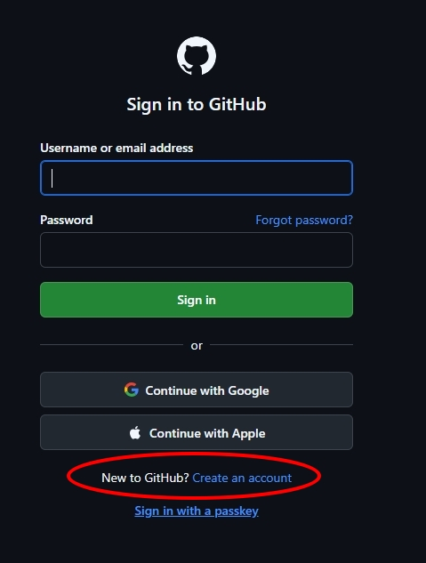
your.name）出現紅字 "Username is not available"，代表該名稱已被註冊！yourname-2026 或 yourname-dev），右側就會出現綠色勾勾 (✔ Available)！
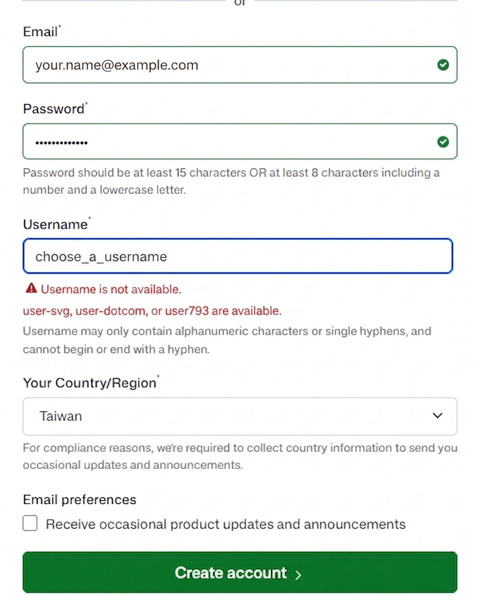
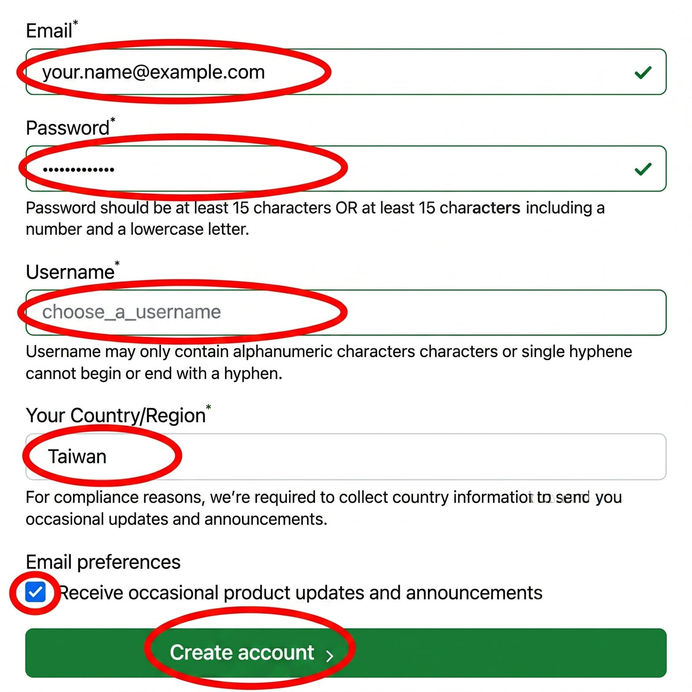
12345678）並填回網頁。| Confirm your email | 確認您的電子郵件地址 |
| Your GitHub launch code | 您的 GitHub 啟用發射代碼（信件標題） |
| Resend the code | 沒收到信？點此重新發送 |
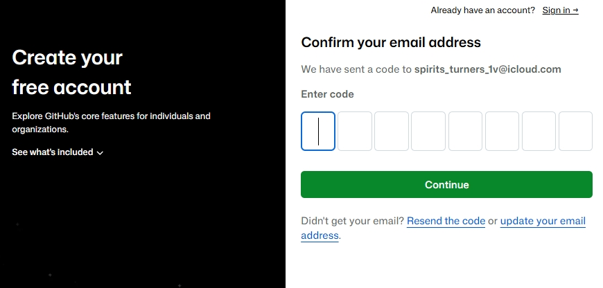
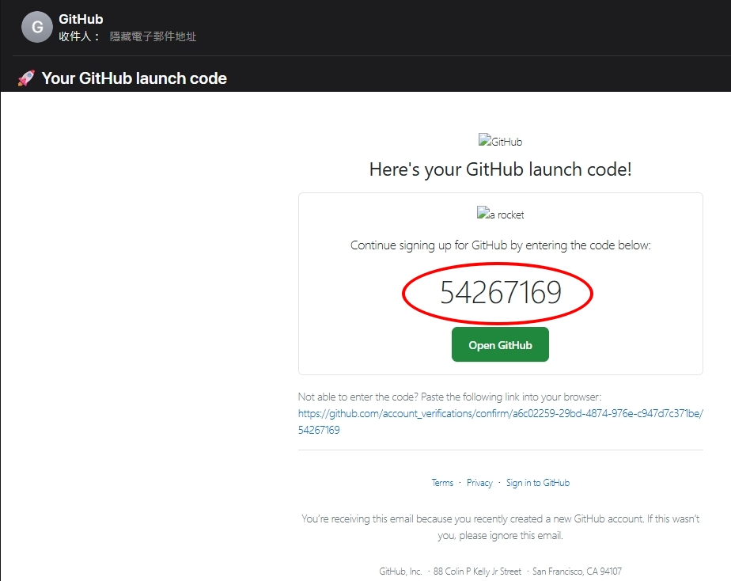
| Dashboard | 儀表板 / 首頁 |
| Create repository | 建立儲存庫（專案程式碼空間） |
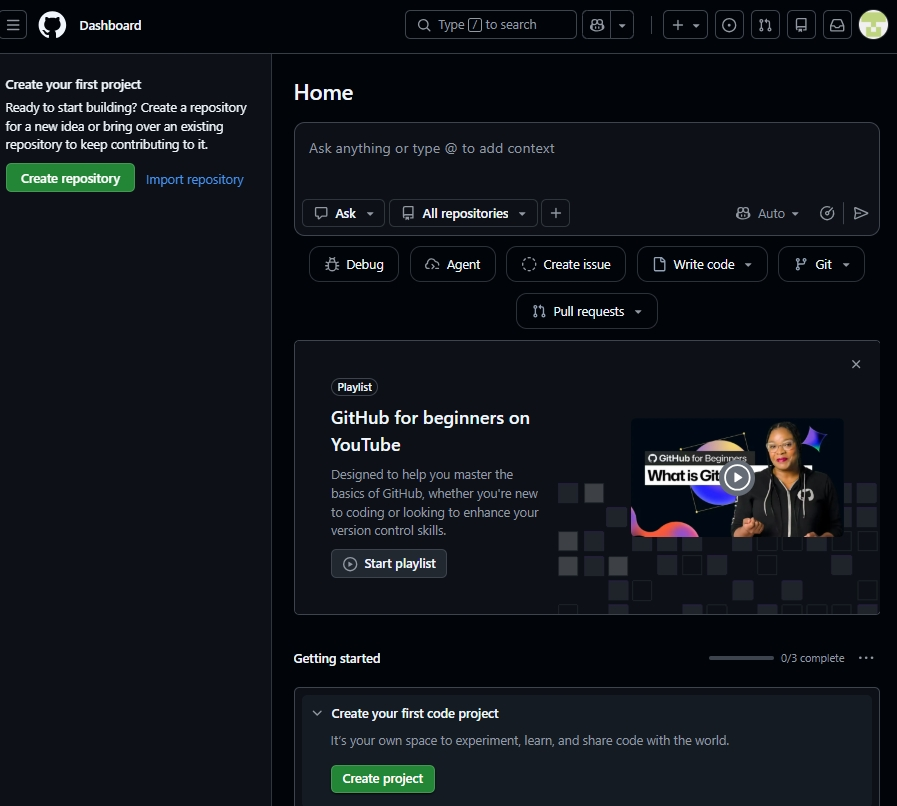
helloworld ➔ 下方顯示 ✔ helloworld is available.。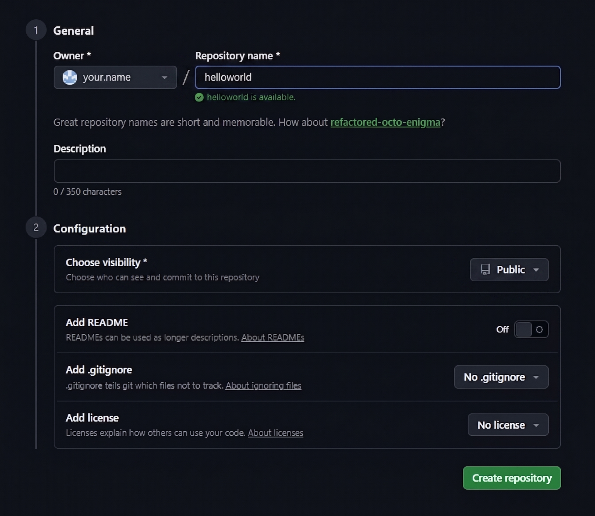
| Quick setup | 快速設定指引 |
| creating a new file | 建立新檔案（直接在瀏覽器線上編輯） |
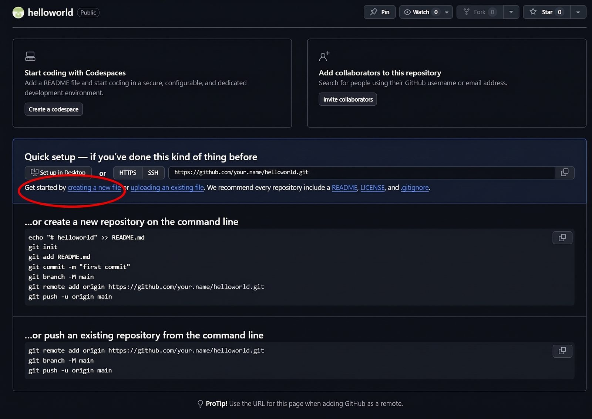
index.html，下方編輯區輸入 hello world ➔ 點右上角「Commit changes...」。Add hello world message to index.html）➔ 點綠色「Commit changes」。index.html 與 1 Commit 提交紀錄！您已正式完成 GitHub 第一次發布！
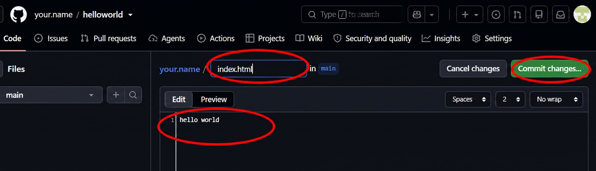
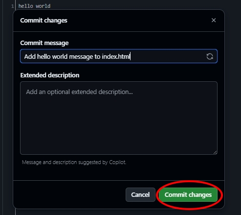
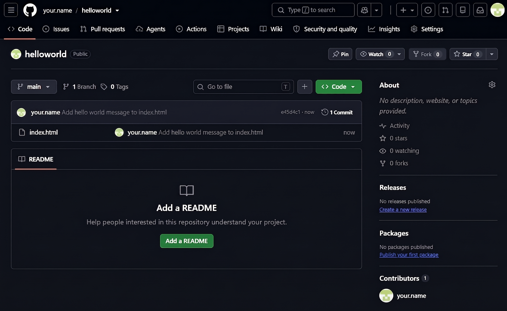
💡 為什麼必須開？ GitHub 官方為了資安防護，已強制要求所有活躍用戶開啟 2FA（雙重驗證）。未開啟未來可能會被限制推送程式碼！